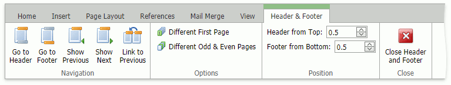
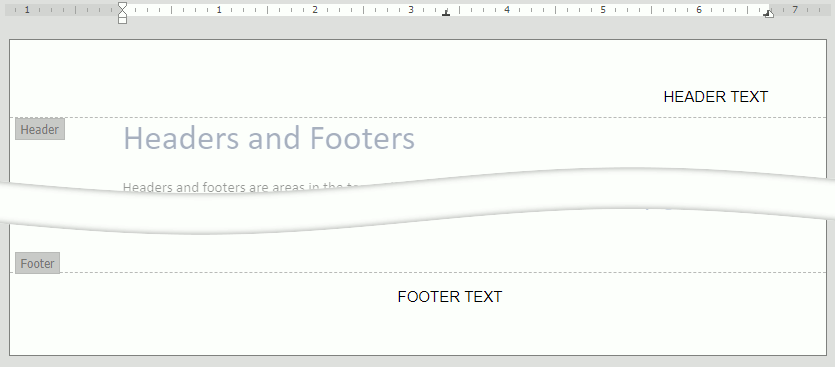

Headers and Footers
Headers and footers are areas at the top and bottom of a page. They can display text and graphics, for example, a company logo, the document title or the author's name.
Insert a header or footer
Click Header or Footer button in Insert tab's Header & Footer group to insert a header or footer.

The Header & Footer context tab appears.

Type text or insert graphics in Header and Footer document areas.

Make the first page header or footer different from the rest of the pages
Double click a header or footer area on the first document page.
Select the Different First Page option in Header & Footer tab's Options group.
Create a header or footer or make changes to the existing header or footer on the first page.
Make the header or footer different in each section or chapter
If a document contains several sections, you can modify header and footer content for each section.
Click a section where you want to vary the header or footer.
Click Header or Footer in Insert tab's Header & Footer group.
The Header & Footer tab appears. Make sure that Link to Previous option is not selected to prevent the connection between the header or footer in this section and the previous section.
Create a new header or footer or change the existing header or footer for this section. Click Show Next in the Navigation group to navigate to the header or footer in the next section.
Repeat the previous four steps for all of the sections in the document.